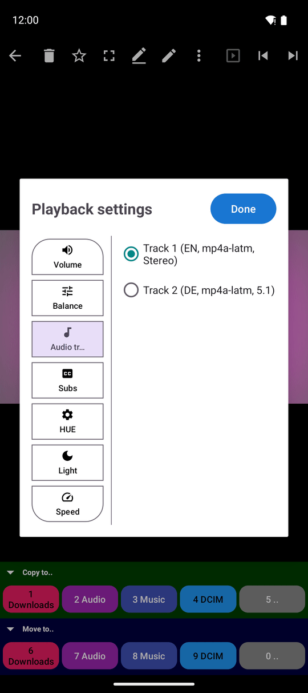
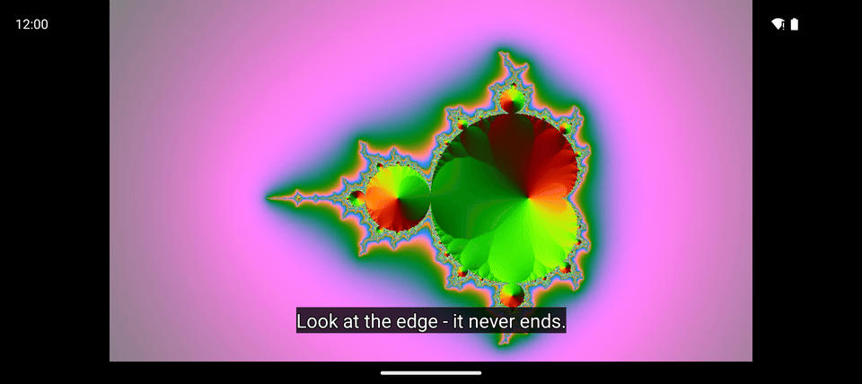

Все редакции, кроме Photos; выбор 3D в окне управления доступен только в VR и noLegal
Субтитры, аудиодорожки, баланс звука и 3D
Выбирайте звуковую дорожку и субтитры, настраивайте комфортный размер шрифта, регулируйте стереобаланс звука, меняйте скорость и цвета видео и смотрите стереопары 3D на обычном экране смартфона.
Почему вам это понравится
Фильмы из интернета часто содержат несколько звуковых дорожек (оригинальную речь, дубляж, авторский перевод, аудиокомментарии) и несколько вариантов субтитров. Смартфон не может заранее угадать ваши предпочтения. Этот рецепт рассказывает, где переключать дорожки, как настроить автоматический выбор языка для онлайн-трансляций и как управлять звуком: громкостью, балансом между наушниками, скоростью воспроизведения, цветокоррекцией и режимом 3D.
- FastMediaSorter в редакции Standard, noLegal, Lite, Legacy, VR или FOSS. Редакция Photos воспроизведение видео не поддерживает.
- Видеофайл с несколькими аудиодорожками или субтитрами (например, фильм в формате MKV).
- Настройка цветопередачи (оттенок и яркость) доступна в редакциях Standard, noLegal, Legacy и VR.
Откройте окно параметров видеоплеера
Запустите видео в видеоплеере и нажмите кнопку Управление на панели команд. Поверх видео откроется компактное окно настроек. В портретной ориентации разделы расположены сбоку, а в альбомной - сверху: Скорость, Громкость, Аудиодорожка, Субтитры, Баланс, Цветовой тон, Яркость и (в некоторых редакциях) 3D.
В окне отображаются только актуальные для текущего видео разделы. Если в файле всего одна дорожка, вкладка Аудиодорожка скрыта, а при отсутствии субтитров нет вкладки Субтитры. Для онлайн-трансляций скрываются настройки цвета, а для прямых эфиров скрывается и скорость, поскольку живую трансляцию нельзя ускорить. Кнопка Готово закрывает окно, а кнопка Сброс возвращает параметры открытого раздела к исходным значениям.

Переключите звуковую дорожку
Откройте вкладку Аудиодорожка. В списке отображаются все доступные дорожки с указанием языка, аудиоформата и количества каналов (например, «Русский, AC3, 5.1»). Нажмите на нужную дорожку - звук переключится мгновенно, без перезапуска и прерывания фильма.
Некоторые форматы многоканального звука не поддерживаются аппаратными декодерами телефонов - такие дорожки помечаются в списке. Если ни одна дорожка не может быть декодирована устройством, видео продолжит воспроизводиться без звука, а плеер выведет подсказку: «Формат звука не поддерживается - воспроизведение без звука». Для файлов Blu-ray в сообщении также перечисляются найденные форматы.
Для интернет-трансляций приложение умеет выбирать нужный язык автоматически: укажите Язык аудио для трансляций в разделе Настройки, вкладка Медиа, блок Трансляции. Если поток содержит дорожку на этом языке, плеер выберет ее сам, а выбранная вами вручную дорожка запоминается для каждого конкретного канала.
Включите субтитры и настройте их читаемость
Откройте раздел Субтитры и выберите язык либо вариант Выкл, чтобы скрыть текст. Если в файле нет встроенных субтитров, в разделе будет указано «Субтитры отсутствуют».
Шрифт субтитров настраивается совместно со шрифтом распознавания текста. Чтобы увеличить размер или изменить начертание, откройте Настройки, вкладку Медиа, раздел Перевод, оцифровка (OCR) и настройте параметры Размер шрифта OCR (от Минимальный до Огромный) и Семейство шрифтов OCR (например, По умолчанию, С засечками или Моноширинный). Выбранные параметры применяются ко всем видео как в полноэкранном режиме, так и при открытой панели управления. Оба параметра доступны, даже если OCR выключен или не поддерживается устройством.

Громкость и регулировка баланса
Вкладка Громкость задает уровень громкости внутри самого плеера независимо от системного регулятора: Без звука, 50%, MAX или любое промежуточное значение ползунком.
Вкладка Баланс смещает звучание между левым и правым ухом: 50/50 - по центру, 30/70 - с акцентом на правый наушник, 70/30 - на левый. Это незаменимо при неравномерном слухе или разной громкости наушников и действует везде в приложении: в видео, музыке и фоновом прослушивании. Для монофонических записей раздел сообщает: «Монозвук - нет каналов для регулировки баланса».
Скорость воспроизведения и цветокоррекция
Вкладка Скорость содержит кнопки быстрого выбора 0.5x, 1.5x, 2x и ползунок точной настройки от 0.25x до 3x. Плеер запоминает выбранную скорость и применяет ее к следующим роликам.
Параметр Цветовой тон сдвигает оттенки изображения по цветовому кругу, а Яркость делает картинку светлее или темнее. Оба параметра меняют только экранное отображение без перезаписи файла и сохраняются для будущих просмотров.
Просмотр 3D-фильмов на обычном экране
В 3D-фильмах кадры для левого и правого глаза расположены рядом (горизонтальная стереопара SBS) или друг над другом (вертикальная стереопара OU). На обычном плоском экране такое видео выглядит раздвоенным. FastMediaSorter автоматически распознает 3D-контент по метаданным файла или пропорциям кадра, не путая обычные широкоформатные фильмы со стереопарами.
При включенном параметре Показывать 3D-контент для одного глаза (Настройки, вкладка Плеер; включен по умолчанию) 3D-фильм масштабируется на весь экран с картинкой для одного глаза.
В редакциях VR и noLegal при включенном режиме 3D и VR в окне управления появляется раздел 3D, где можно вручную выбрать формат: Автоопределение, Горизонтальная стереопара (SBS), Вертикальная стереопара (OU) или Моно (Выключено), а также панорамные форматы 360° и 180°. О просмотре в гарнитурах читайте в рецепте Пространственный 3D-кинотеатр и видео 360°.
Что вы получите
Фильм воспроизводится на нужном языке с четкими субтитрами, которые легко читать с дивана, баланс звука идеально настроен под ваши наушники, а 3D-стереопары комфортно смотрятся на обычном экране телефона.
Советы и решение проблем
- Хотите задать язык для инте�-нет-каналов? �-ля потоков п�-едусмот�-ены отдельные па�-амет�-ы Язык аудио для т�-ансляций и Язык субтит�-ов для т�-ансляций --- см. Восп�-оизведение инте�-нет-т�-ансляций.
- Фильм идет без звука, хотя на компьютере играет нормально? Вероятно, звуковая дорожка записана в неподдерживаемом телефоном кодеке (например, DTS-HD или TrueHD). Сконвертируйте аудиодорожку в формат AAC.
- Нет кнопок �-егули�-овки ско�-ости? Вы смот�-ите п�-ямой эфи�- --- живую т�-ансляцию нельзя восп�-оизводить быст�-ее �-еального в�-емени.